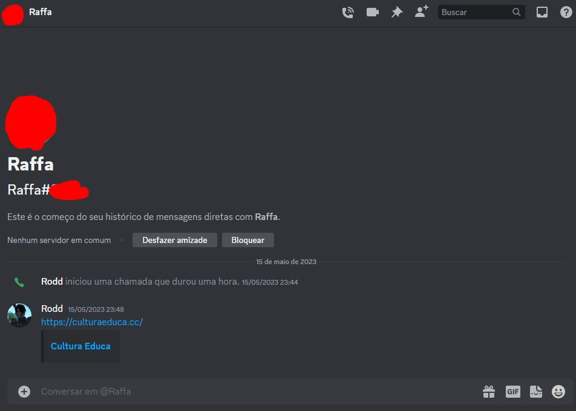

Cultura Educa Avaliação
Home
Extreme User Interview
Participante:
Raphaela
Descrição:
Familiaridade com computadores básico (sabe usar para tarefas básicas mas não é muito proficiente)
Data de nascimento:
22/01/2000
Gênero:
Mulher cis
Você conhecia o site Cultura Educa?
Não
Você achou/acha fácil de usar?
Não. Falta uma explicação interativa no site no quesito de ensinar o usuário a como utilizá-lo.
O que você achou de positivo nele?
Ele mescla muitas informações em um único lugar. A informação dos equipamentos nos arredores é muito prática.
O que você achou de negativo nele?
O site é muito claro, sendo difícil enxergar algumas coisas no mapa. A paleta de cores não favoreceu a visualização.
Que melhorias você gostaria que houvesse?
Deixar o site mais colorido e deixá-lo mais dinâmico para se explicar melhor. O site deveria ser mais acessível até para crianças menores, que não têm chance atualmente de entender como utilizar o site.
Você recomendaria o site? Por que?
Sim, a ideia do site é muito legal. Se o site tiver mais visibilidade, os desenvolvedores podem ver isso e abranger um público maior
Você pretende começar/continuar a usar?
Futuramente sim. Quando tiver mais tempo para visitar locais culturais, o site vai ajudar bastante.
Fly on the Wall
Observação
A participante tentou criar um usuário, e ficou um pouco frustrada com o número de informações necessárias para isso. Não percebeu que precisava confirmar o email. Ela tentou descobrir como adicionar informações sobre locais no mapa, mas não conseguiu. Ela então tentou buscar as instalações por nome, mas teve dificuldade encontrando a exata categoria que se encaixava. Só descobriu para que servia a funcionalidade “Camadas” mais para o fim do teste, e não descobriu que era possível clicar nas instalações.
